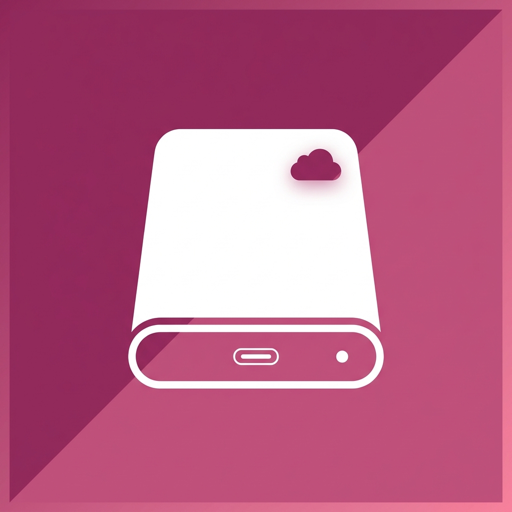
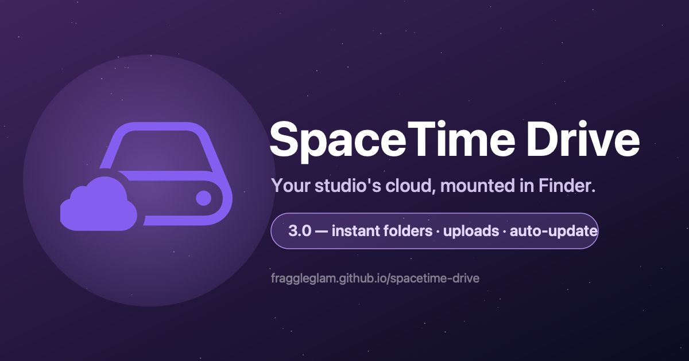

SpaceTime Drive brings your Backblaze B2 buckets into Finder as native macOS drives. Built so post-production teams can hand off media to producers, clients, and freelancers without VPNs, FTP, or finicky sync apps.

What it does
Sign in once. Every workspace you have access to shows up in Finder as a drive on the Desktop. Open files directly. Drag them around. No sync folders to babysit.
Each workspace appears as its own drive — browse, open, copy, rename. Files are pulled on demand so the drive is instantly browseable, even for multi-TB projects.
Reads and writes straight to your Backblaze B2 bucket. No middle servers, no sync engine, no third-party storage. Your team's cloud, your team's data.
Admins see every workspace. Producers and freelancers only see what they've been granted — enforced in both the app and the Finder mount.
Getting started
No kernel extensions, no Recovery Mode, no reboots. Run the installer, sign in, and your drives appear on the Desktop.
Use the Download for Mac button at the top of the page. It's about 12 MB.
Double-click the downloaded installer and follow the prompts. You'll enter your Mac password once — that's standard for apps that integrate with Finder.
Open SpaceTime Drive from Applications and sign in with the email your admin invited. Your assigned drives appear on the Desktop within a few seconds.
Drives behave like any other Finder volume. Double-click to open. Drag files to copy. cmd + click to reveal in Finder from the app.
System requirements
Notarized by Apple. Built by post-production folks for post-production folks.
Download SpaceTime Drive